Wzbudzanie prądu indukcyjnego
Zmienne pole magnetyczne może wytworzyć w przewodniku prąd. Taki prąd nazywamy prądem indukcyjnym. Natomiast zjawisko wzbudzania prądu indukcyjnego nazywamy indukcją elektromagnetyczną.
Prąd indukcyjny możemy wzbudzić poprzez:
- wsuwanie i wysuwanie magnesu (ruch magnesu względem zwojnicy)
- wsuwanie i wysuwanie elektromagnesu do zwojnicy
- włączanie i wyłączanie prądu w zwojnicy
- zmianę natężenia prądu w elektromagnesie przy pomocy opornicy suwakowej
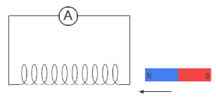
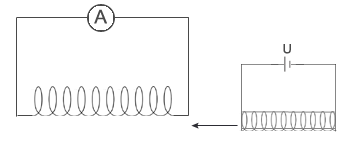
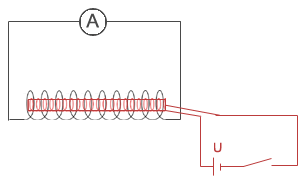
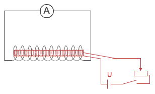
STRUMIEŃ WEKTORA INDUKCJI MAGNETYCZNEJ
|
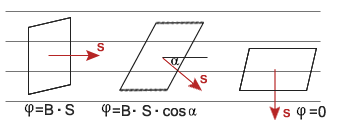
Całkowity strumień magnetyczny przechodzący przez dowolną powierzchnię zamkniętą równy jest zero. Linie pola są zawsze krzywymi zamkniętymi, tyle samo linii pola wchodzi do danej powierzchni jak i z niej wychodzi.
ZJAWISKO INDUKCJI ELEKTROMAGNETYCZNEJ
|
REGUŁA LENZA
|
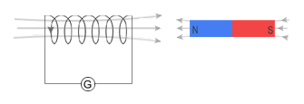
Siła elektromotoryczna indukcji
Aby wyprowadzić wzór na siłę elektromotoryczną indukcji, rozważmy przewodnik, znajdujący się w polu magnetycznym, posiadający poprzeczkę poruszającą się ruchem jednostajnym.
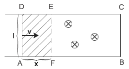
Przez powierzchnię przewodnika przechodzi strumień magnetyczny:
Aby poprzeczka poruszała się musi być wykonywana praca przez siłę elektrodynamiczną.
Przez przewodnik płynie prąd, a więc wykonywana jest także praca prądu.
Porównujemy obie prace:
Z rysunku wynika, iż:
Zależność tą podstawiamy do wcześniej wyliczonej równości:
Korzystając z wzorów na siłę elektromotoryczną i na strumień magnetyczny , otrzymujemy wzór na siłę elektromotoryczną indukcji:
PRAWO FARADAYA
|
Prąd wirowy
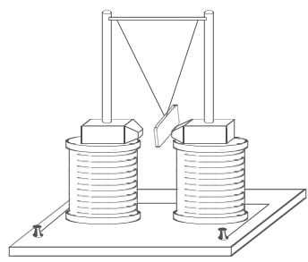
Między biegunami elektromagnesu waha się aluminiowa płytka. Gdy prąd w uzwojeniach nie płynie, płytka waha się bez większych oporów. Po włączeniu prądu płytka jest silnie hamowana. W płytce powstaje prąd indukcyjny.
Prądy indukcyjne mogą powstawać w dowolnych bryłach metalu. Takie prądy nazywamy prądami wirowymi.
Gdy płytka opada (zbliża się do biegunów elektromagnesu) prądy wirowe powstające w płytce płyną w takim kierunku, aby pole magnetyczne tych prądów odpychało się z polem magnetycznym elektromagnesu. Gdy płytka mija bieguny, prądy wirowe zmieniają kierunek i zgodnie z regułą Lenza dalej przeszkadzają ruchowi płytki.
Powstawanie prądów indukcyjnych jest w wielu przypadkach szkodliwe, gdyż wydzielane przez nie ciepło jest przyczyną strat energii, a nawet uszkodzeń urządzeń elektrycznych. Aby zmniejszyć ich działanie, części metalowe znajdujące się w zmiennym polu magnetycznym wykonuje się z cienkich i wzajemnie odizolowanych blach (najczęściej z stali krzemowej), których płaszczyzny są równoległe do linii pola magnetycznego.
Przykładem zastosowania prądów wirowych są piece indukcyjne. Wanna pieca indukcyjnego, w której umieszcza się ogrzewane części metalowe, jest otoczona zwojami, przez które przepływa szybkozmienny prąd elektryczny. Zmiany pola magnetycznego indukują prądy wirowe, w umieszczonych w wannie częściach metalowych, które ogrzewają je do wysokiej temperatury powodując stopienie metalu.
Samondukcja (indukcja własna)
|
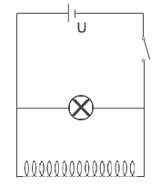
Aby w zwojnicy powstało zjawisko samoindukcji musi w niej płynąć prąd i ten prąd musi się zmieniać. W naszym obwodzie zmiana natężenia prądu następuje w dwóch momentach: w chwili włączania i wyłączania prądu. W tych dwóch momentach w obwodzie czynne są dwie siły elektromotoryczne: napięcie U (kilkuwoltowe) i SEM samoindukcji.
W momencie włączenia prądu w obwodzie powstający prąd indukcyjny zgodnie z regułą Lenza płynął będzie w kierunku do niego przeciwnym, a łączna siła elektromotoryczna w obwodzie będzie równa: .
W chwili wyłączania prądu obydwa prądy płynął zgodnie, a łączna SEM równa jest: i jest większa od napięcia zapłonu żarówki, a więc żarówka błyska.
Chcąc wyprowadzić wzór na siłę elektromotoryczną samoindukcji, korzystamy ze wzoru:
n - liczba zwojów zwojnicy
Wiemy, iż strumień magnetyczny wyraża się wzorem:
Podstawiamy zamiast natężenia wzór na natężenie pola magnetycznego w zwojnicy:
Uzyskaną równość wstawiamy do wzoru na strumień magnetyczny:
a następnie ten wzór podstawiamy do wzoru na siłę elektromotoryczną:
Do wzoru podstawiamy współczynnik zwojnicy, który nosi nazwę indukcyjności:
Jednostką indukcyjności jest henr.
Siła elektromotoryczna samoindukcji jest równa iloczynowi indukcyjności i stosunku zmian natężenia prądu do czasu, w którym ta zmian nastąpiła.
Induktor
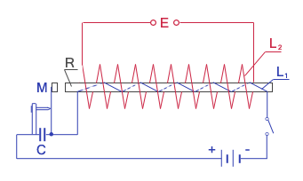
Cewka indukcyjna Ruhmkorffa, zwana też induktorem, składa się z wewnętrznego uzwojenia L1, utworzonego z niewielkiej ilości zwojów, nawiniętych na rdzeń R i połączonych ze źródłem napięcia stałego przez przerywacz z włączonym równolegle kondensatorem oraz z zewnętrznego uzwojenia L2, złożonego z dużej ilości zwojów.
Po włączeniu prądu w obwodzie z indukcyjnością L1 w rdzeniu pojawia się pole magnetyczne, wytwarzane przez ten prąd. Pole to przyciąga młoteczek do rdzenia. Obwód zostaje przerwany. Powoduje to zanik prądu w tym obwodzie i w konsekwencji zanik pola magnetycznego w rdzeniu. Młoteczek wraca na swoje pierwotne miejsce zamykając ponownie obwód.
W rdzeniu istnieje więc zmieniające się pole magnetyczne. W tym zmiennym polu magnetycznym znajduje się zwojnica L2. W wyniku zjawiska samoindukcji elektromagnetycznej wytwarza się w niej siła elektromotoryczna. Ma ona bardzo dużą wartość ze względu na dużą liczbę zwojów i szybkość zmian pola magnetycznego.
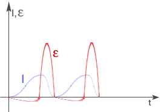
Wzbudzenie stosunkowo dużej siły elektromotorycznej powoduje wyładowania iskrowe między stykami przerywacza, które niszczą je, a prócz tego powodują przepływ prądu między stykami już po ich rozwarciu, przedłużając czas otwierania obwodu. W celu wyeliminowania tego zjawiska stosuje się kondensator, które ładuje się prądem indukcji własnej, zmniejszając napięcie między stykami i eliminując iskrzenie.
Induktor stosuje się do zapłonu paliwa w cylindrach niskoprężnych silników spalinowych, do wytwarzania wyładowań elektrycznych w świetlówkach.
Prądnica prądu zmiennego
Prądnica jest urządzeniem służącym do otrzymywania energii elektrycznej dzięki wykonywanej pracy mechanicznej.
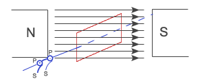
Na ramkę nawinięta jest zwojnica. Końce uzwojenia dotykają dwóch pierścieni P, do których z kolei dotykają szczotki S (układ takich pierścieni i szczotek to komutator). Ramkę obracamy w polu magnetycznym wykonując pracę mechaniczną. Dzięki temu zmienia się ciągle strumień magnetyczny, przechodzący przez ramkę. W wyniku zjawiska indukcji elektromagnetycznej w uzwojeniu powstaje siła elektromotoryczna (między szczotkami powstaje napięcie).
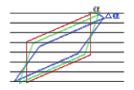
W bardzo krótkim czasie t ramkę przekręcamy jeszcze o kąt .
Korzystamy z wzoru trygonometrycznego:
oraz z przybliżenia dla małych kątów:
Uzyskaną zależność podstawiamy do wzoru na siłę elektromotoryczną:
Po podstawieniu wzoru wyrażającego wartość maksymalną , otrzymujemy:
Podobną zależność wykazuje natężenie:
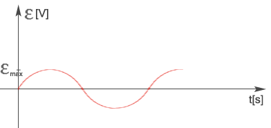
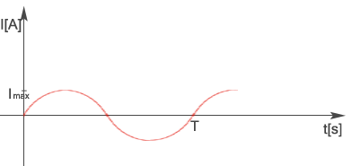
Taki prąd (zmieniający się sinusoidalnie) nazywamy prądem przemiennym. Wielkością, która charakteryzuje ten prąd, jest tzw. natężenie skuteczne.
|
Aby obliczyć pracę wykonywaną przez prąd przemienny, musimy obliczyć elementarne prace, jakie wykonuje prąd w bardzo krótkim czasie
- natężenie skuteczne
- natężenie maksymalne
- napięcie skuteczne
- napięcie maksymalne
Transformator
Transformator jest urządzeniem służącym do zamiany napięć.
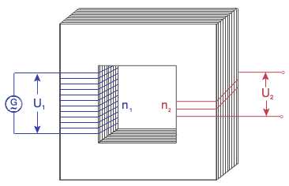
Prąd płynący w uzwojeniu pierwotnym n1 wytwarza w rdzeniu zmienne pole magnetyczne. Ze względu na dużą przenikalność magnetyczną rdzenia pole to rozchodzi się po całym rdzeniu. W tym zmiennym polu magnetycznym znajduje się uzwojenie wtórne n2. W wyniku zjawiska indukcji elektromagnetycznej powstaje w nim napięcie U2.
n - ilość zwojów
Sprawnością transformatora nazywamy stosunek mocy w uzwojeniu wtórnym do mocy w uzwojeniu pierwotnym.
Pojemność w obwodzie prądu przemiennego
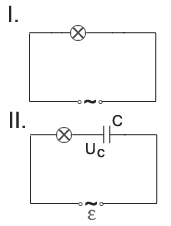
Przez obwód II prąd stały płynąć nie będzie, gdyż kondensator stanowi przerwę w obwodzie. Prąd przemienny płynie przez obwód II, ale żarówka świeci się o wiele słabiej.
Kondensator włączony w obwód prądu przemiennego stanowi dodatkowy opór. Nazywamy go oporem pojemnościowym (reaktancją pojemnościową). Jest to tzw. opór pozorny lub bierny. Występuje tylko w obwodach prądu zmiennego.
Załóżmy, że opór w obwodzie jest pomijalnie mały.
Uzyskany wzór na ładunek podstawiamy do podstawowego wzoru na natężenie:
Uzyskaliśmy wzór na natężenie. Natomiast napięcie równe jest:
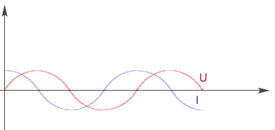
Napięcie i natężenie na okładkach kondensatora nie są ze sobą zgodne w fazie. Natężenie prądu wyprzedza napięcie w fazie o kąt
- opór pojemnościowy
Jeżeli uwzględnimy opór R (obwód RC), to musimy wprowadzić wielkość zwaną zawadą:
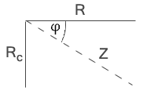
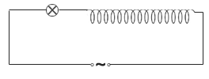
Indukcyjność w obwodzie prądu przemiennego
Indukcyjność w obwodzie prądu przemiennego stanowi dodatkowy opór zwany oporem indukcyjnym.
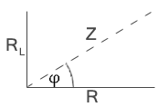
Rozważmy jeszcze obwód, który oprócz kondensatora posiada również zwojnicę (obwód RLC):
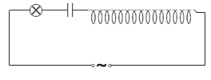
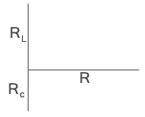
Jeśli mówimy, że obwód jest w rezonansie elektromagnetycznym. Wtedy .
Praca i moc prądu przemiennego
W obwodzie prądu przemiennego, zawierającym jedynie opór omowy R, natężenie i napięcie są z sobą w fazie.
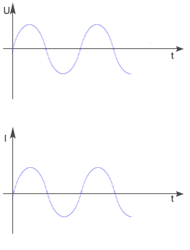
Moc i praca skuteczna w takim obwodzie wynoszą:
W obwodzie zawierającym opory pozorne (indukcyjny lub pojemnościowy) następuje przesunięcie fazowe o kąt
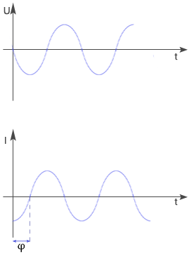
W takim obwodzie prądu przemiennego moc skuteczną obliczamy ze wzoru:
a pracę skuteczną wykonaną w czasie t: